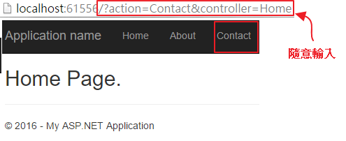
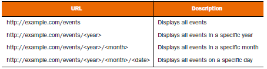

routing routes.MapRoute
一個預設的route範例為
public static void RegisterRoutes(RouteCollection routes)
{
routes.IgnoreRoute("{resource}.axd/{*pathInfo}");
routes.MapRoute(
name: "Default",
url: "{controller}/{action}/{id}",
defaults: new { controller = "Home", action = "Index", id = UrlParameter.Optional }
);
}
一、基本說明
1、IgnoreRoute
IgnoreRoute可忽略特定網址樣式的匹配，
{resource}與{pathInfo}為替代性符號，
假設網址為aaa.axd/ccc/ddd/2
routes.IgnoreRoute("{resource}.axd/{pathInfo}");
只會比對到aaa.axd/ccc，而加上星號表示取得全部
routes.IgnoreRoute("{resource}.axd/{*pathInfo}");
則會完整比對出aaa.axd/ccc/ddd/2，
也就是說當使用者輸入樣式時，則會被忽略。
2、Route的名稱必須是唯一
3、{controller}與{action}是關鍵字不能隨意改名，其他{}參數可自行定義
4、當有多個MapRoute時，比對順序是由上至下一比對成功就結束，下面待比對的MapRoute直接跳離。
5、例如增加constraints參數限制只有Index與About能連
public static void RegisterRoutes(RouteCollection routes)
{
routes.IgnoreRoute("{resource}.axd/{*pathInfo}");
routes.MapRoute(
name: "Default",
url: "{controller}/{action}/{id}",
defaults: new { controller = "Home", action = "Index", id = UrlParameter.Optional },
constraints: new { action = "Index|About"}
);
}
如想要連到Contact頁面時，則會比對不到而導到預設路由Index頁面

6、也可以實作IRouteConstraint介面來自訂的路由約束條件
public static void RegisterRoutes(RouteCollection routes)
{
routes.IgnoreRoute("{resource}.axd/{*pathInfo}");
routes.MapRoute(
name: "Default",
url: "{controller}/{action}/{id}",
defaults: new { controller = "Home", action = "Index", id = UrlParameter.Optional },
constraints: new { id = new GuidConstraint() }
);
}
這部份請參考ASP.NET MVC Route 自訂限制條件（constraints）的技巧會較詳細
二、其他說明
1、custom static route
e.g. http://localhost/Privacy/aaa/bbb/ccc，that can pass below route role
routes.MapRoute(
"privacy_policy",
"Privacy/aaa/bbb/ccc",
new { controller = "Privacy", action = "Index" }
);
其Route的規則為
route name:privacy_policy
route url:Privacy/aaa/bbb/ccc
(1)、由於這是靜態路由，url固定輸入為http://localhost/Privacy/aaa/bbb/ccc時，
預設會找到controller為"Privacy"並且action為"Index"。
(2)、但此路由沒有{controller}、也沒有{action}，
也說明了網址沒有提供特別指定controller與action的選項，
也就是路由只接受http://localhost/Privacy/aaa/bbb/ccc網址。
2、custom dynamic route
e.g. http://localhost/MyDate/aaa/bbb/ccc/1，that can pass below route role
routes.MapRoute(
"MyDate",
"MyDate/aaa/bbb/ccc/{id}",
new { controller = "MyDate", action = "Index", id = UrlParameter.Optional }
);
其url的固定格式為MyDate/aaa/bbb/ccc/，
並加上代數名稱為id的参數，
由於指定id = UrlParameter.Optional所以id的參數可有可無，
以下url皆可通過route rule
http://localhost/MyDate/aaa/bbb/ccc
http://localhost/MyDate/aaa/bbb/ccc/2
(1)、此路由大部份算是靜態路由，只有{id}是可以特別指定的選項，
但此路由沒有{controller}、也沒有{action}，
也說明了網址沒有提供特別指定controller與action的選項，
也就是路由只接受http://localhost/MyDate/aaa/bbb/ccc/{id}網址(註一)。
註一、{id}為動態可變。
(2)、路由{id}可用來作網址到Controller參數傳遞
由於{id}是UrlParameter.Optional的，所以Controller對應的寫法為
using System;
using System.Collections.Generic;
using System.Linq;
using System.Web;
using System.Web.Mvc;
namespace MyRoute.Controllers
{
public class MyDateController : Controller
{
// GET: MyDate
public ActionResult Index(int? id)
{
ViewBag.Title = "";
if (id != null)
{
ViewBag.Title = id;
}
return View();
}
}
}
或
using System;
using System.Collections.Generic;
using System.Linq;
using System.Web;
using System.Web.Mvc;
namespace MyRoute.Controllers
{
public class MyDateController : Controller
{
// GET: MyDate
public ActionResult Index(string id)
{
ViewBag.Title = "";
if (id != null)
{
ViewBag.Title = id;
}
return View();
}
}
}
以上兩寫法其路由都可以過，則可以發現一個網址可不可以成功對到controller接收參數，
是看action的參數名稱，而不是參數形態。
3、較複雜的custom dynamic route
e.g. http://localhost/Products/B3200/index，that can pass below route role
routes.MapRoute("product",
"products/{productCode}/{action}",
new { controller = "product", action = "index" }
);
以下url皆可通過
http://localhost/Products/EG510/index
http://localhost/Products/A6200/index
(1)、路由products/{productCode}/{action}，如果{action}省略的話，
則路由預設會指到controller = "product" and action = "index"。
(2)、而如果{action}與{productCode}都省略的話，則找不到合適的路由，
因為productCode因為沒指定urlParameter.Optional所以参數是必要存在的。
(3)、由於此路由沒有{controller}所以無法特別指定controllerName。
(4)、controller接收productCode參數的寫法，注意，參數形態不限於string。
using System;
using System.Collections.Generic;
using System.Linq;
using System.Web;
using System.Web.Mvc;
namespace MyRoute.Controllers
{
public class ProductController : Controller
{
// GET: Product
public ActionResult Index(string productCode)
{
ViewBag.Title = "";
if (productCode != null)
{
ViewBag.Title = productCode;
}
return View();
}
}
}
則皆可通過
http://localhost/Products/index
http://localhost/Products/EG510/index
4、ActionLink的routevalue與MapRoute和參數傳遞的關係
Controller為
using System.Web.Mvc;
namespace WebApplication2.Controllers
{
public class HomeController : Controller
{
public ActionResult Index()
{
return View();
}
public ActionResult About(int? id)
{
return View(id);
}
[ActionName("About2")]
public ActionResult About(int? id, string name)
{
return View((object)(id + name));
}
}
}
Index.cshtml為
@{
ViewBag.Title = "Home Page";
}
@Html.ActionLink("About", "About", new { id = 3 })
<br>
@Html.ActionLink("About2", "About2", new { id = 3, name = "aaa" })
About.cshtml為
@model int
@Model
About2.cshtml為
@model string
@Model
確認一下RouteConfig的預設路由
routes.MapRoute(
name: "Default",
url: "{controller}/{action}/{id}",
defaults: new { controller = "Home", action = "Index", id = UrlParameter.Optional }
);
(1)、第一個連結@Html.ActionLink("About", "About", new { id = 3 })
相信大家很熟悉了，點擊後跑出的連結為
http://localhost:52544/Home/About/3
(2)、第二個連結@Html.ActionLink("About2", "About2", new { id = 3, name = "aaa" })
可能有些疑問，點擊後跑出的連結為
http://localhost:52544/Home/About2/3?name=aaa
變成id = 3原本就是路由的一部份，而name = "aaa"為傳統參數傳遞方式。
5、其他例子
http://localhost:60789/Archive/12-25-2009
其controller接收参數為datatime
routes.MapRoute(
"Blog", // Route name
"Archive/{entryDate}", // URL with parameters
new { controller = "Archive", action = "Entry" } // Parameter defaults
);
using System;
using System.Web.Mvc;
namespace MvcApplication1.Controllers
{
public class ArchiveController : Controller
{
public string Entry(DateTime entryDate)
{
return "You requested the entry from " + entryDate.ToString();
}
}
}
學到這邊產生這種url也不是問題了http://localhost/events/2014/12/10

最後提供「飯粒檔」自行玩玩
参考資料：
ASP.NET MVC Routing Overview (C#)
【茶包射手日記】CSS Bundle路徑有"."造成HTTP 404